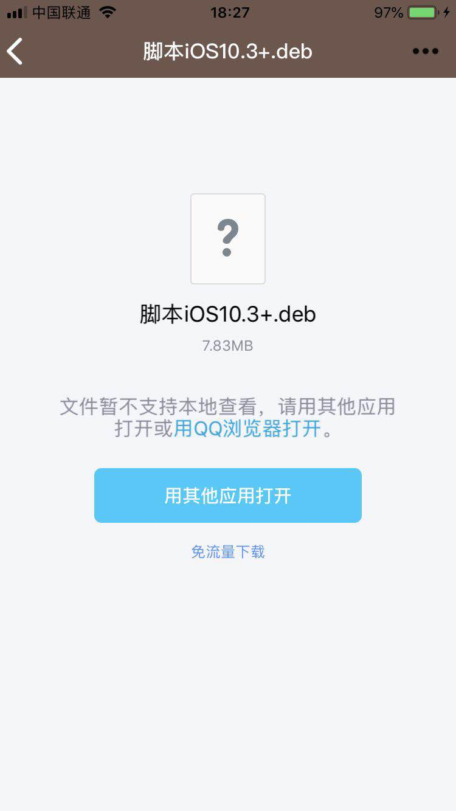
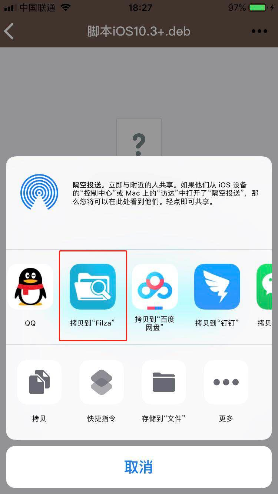
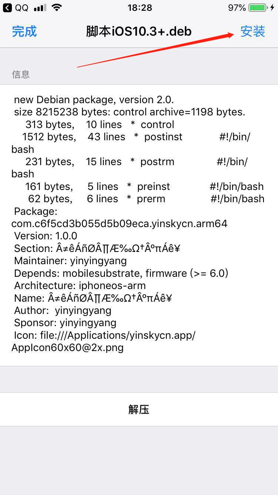
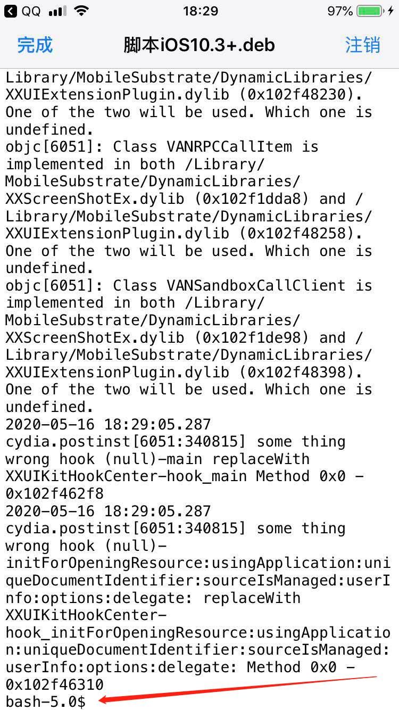
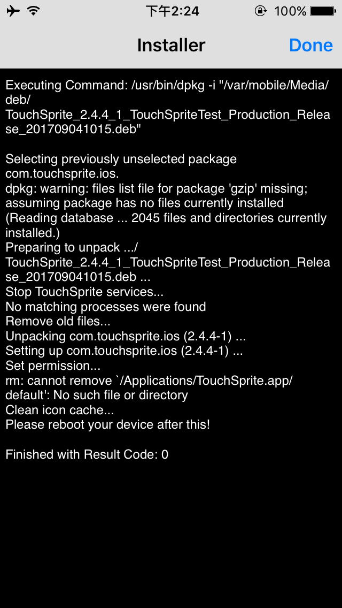
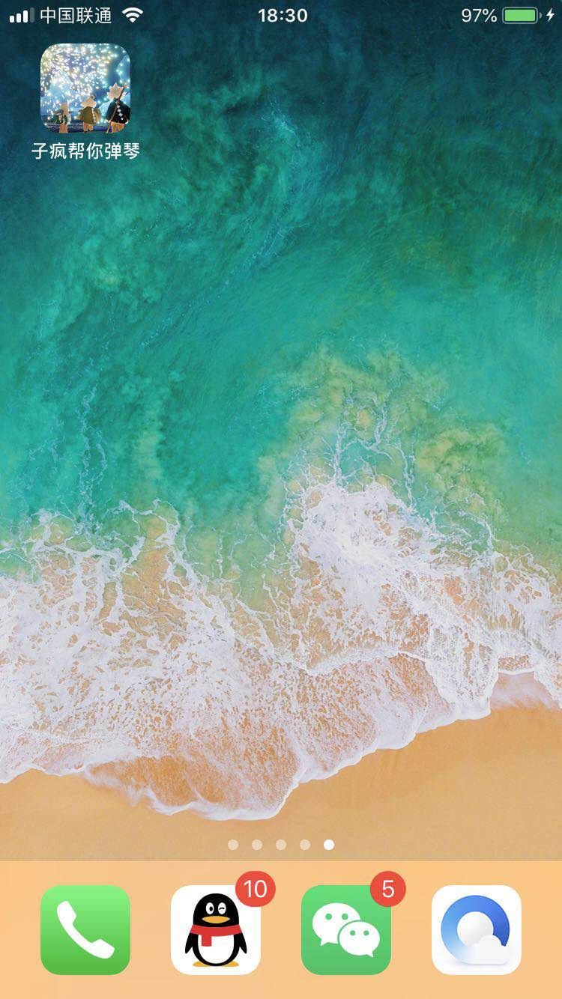
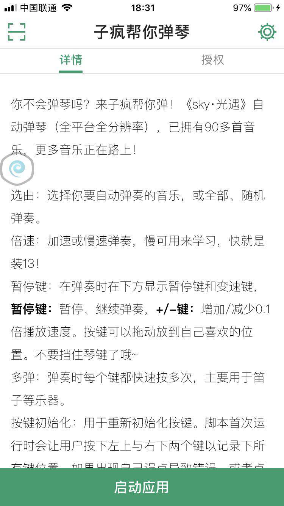

触动小精灵安装说明
1.下载：
直接下载IOS8-10.2IOS10.3及以上安卓版
下载手机对应系统的脚本插件包点击加群

2.安装：
安卓直接安装下载好的.apk文件，苹果用户安装方法如下：
用文件管理器打开安装包，选择安装（不同系统界面不同）


等待安装完成，完成后最后一行应该显示“bash-**$”（**是数字）或“Result Code:0”，如图：


完成后需要重启手机，不完美越狱用户需要再次越狱。注销手机是无效的。
如果使用中出现无法使用等情况，请关闭脚本服务后重启手机。
3.使用
安装后可在桌面上看到图标

点击图标，可看到界面，右上角可进行设置，可根据爱好选择“悬浮窗”运行或使用“音量键”控制。

4.特别说明：
第一次运行时请保证手机是横屏状态，否则按键位置的记录可能出现错误。
注：脚本有5小时免费试用期，请试用确保脚本可用后再购买。